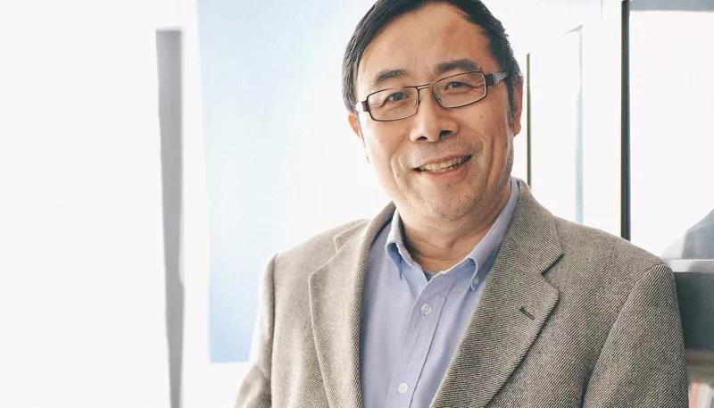

来源： 2018-06-07

彭凯平
●清华大学社会科学学院院长、心理系创系主任、积极心理学研究中心主任
●力合商学院《积极心理学》主讲老师
●中国最有资格谈幸福的学者，唯一一位两次走进中南海给政治局委员做专题报告的心理学学者，也是唯一一个连续两年代表中国在“联合国国际幸福日"大会做报告的学者。
彭凯平：求解幸福
幸福是什么？怎样才能创造幸福、感知幸福、放大幸福？
在彭教授看来，幸福是一种福流，是一种有意义的快乐；幸福要我们自己去创造，要顺应积极天性。当我们顺应所有积极天性的时候，我们就会进入一种特别酣畅快乐的状态，这个状态就是澎湃的福流。
1、2017联合国世界幸福报告中国排名仅第79位
在2017联合国世界幸福报告中，中国排名仅仅在第79位。彭凯平分析认为，中国在政治实力、军事实力、平均寿命、医疗健康保险等硬指标方面都做得不错，但拖累中国排名的恰恰是三个重要心理指标：
第一，社会公益水平偏低。中国人愿意做公益、做慈善捐款的比例很低。中国富人捐助比例在全世界排名倒数第一位。
第二，社会信任度偏低。他的团队曾进行过一项13种语言正面和负面表达的研究，结果发现，在过去200年间，中文的负面表达在全世界是最明显的。他们发现，中国有这样一种现象：如果你讲负面的话，大家都觉得有道理；而如果你讲正面的话，大家都会说你是在“装”。这是一个很重要的社会心理问题。
第三，主观幸福感不足。中国人工作通常是为了前途、为了养家糊口，所以从工作中得到幸福的比例偏低。如果问中国老百姓幸福吗，得到的最多的回答是“不知道”。
正因此，彭凯平教授强调，心态建设、心态发展、心态调整是中国在改革开放、经济进步之后必须补的一门课程，心理建设甚至要摆在社会建设之前。“你的心理建设如果没搞好，搞社会建设和政治改革都会出问题，所以心态调整是第一位的。”
2、80%的中国人不能从工作当中得到快乐
彭凯平教授带领清华大学心理学系的团队做了很多网络心理的研究，除了研究幸福指数之外，也对中国人民的生活健康指数做了诸多研究。换句话说，老百姓在做什么事情？每一种事情为他带来幸福的感受如何？
他们的研究发现，80%的中国人不能从自己的工作当中得到快乐，中国人在工作中产生幸福感的人数，在世界上所有工业化国家里面排名倒数第一。这是因为大部分中国人把工作当做一种责任、贡献和服务，当做一种养家糊口的手段，而不是让自己产生幸福的方法。
彭凯平教授支招说，虽然外在的环境不能改变，但自己对工作的认识能够改变，可以尝试把工作当做幸福的手段和方法，也可以把这个工作当做一种产生意义的特别重要的源泉。
3、幸福是一种福流
美国心理学家齐斯真•米哈伊曾用近15年时间追踪一些特别成功的人，结果发现，这些人有一个共同的特点——当他们做自己特别喜欢的事情时，经常会进入一种物我两忘、天人合一、酣畅淋漓的状态。这种经由全神贯注所产生的心理体验，米哈伊称之为“FLOW”。彭凯平把它翻译为“福流”。
如果一件事让你产生浓厚兴趣，专注而沉浸其中，对周围的一切浑然不知；你始终被一种愉悦的力量推动着，虽然这件事对你有挑战，但你不断探索，觉得能控制它；当活动完成后，你无比喜悦，体会到创造性的乐趣。如果上面的情景都曾出现，毫无疑问，你就是拥有过福流体验的人。
“幸福的体验是一种澎湃的福流。我希望30年之后，《新华字典》能够把’福流’作为一个词语收录其中。”彭凯平说。
4、幸福是一种有意义的快乐
在彭教授看来，幸福不是虚幻的概念，也不是简单的满足，更不仅仅是心灵鸡汤，它有脑科学的定位，有神经递质的作用，有经济的、社会的各种效用，也有看得见、抓得着的数据变化。
彭教授给出的定义是，“幸福是一种有意义的快乐。”首先幸福绝对不是虚幻的概念，幸福有物质的生理的基础，起码有三个特别重要的生理指标和幸福密切相关。一个就是幸福的人一定不能有过度的负面情绪的活动，杏仁核是人类负面信息加工的中心，人在不开心、焦虑、恐惧时，杏仁核充血产生很多不愉快的情绪，所以幸福绝对没有那种杏仁核过分的活动。第二个特别重要的指标，幸福一定要有一些神经递质的分泌，大脑一个特别重要的神经加工中心叫VTA，它分泌出来的神经化学激素类——类非肽、多巴胺、催产素、血清素，都是和我们幸福的体验密切相关的，所以是看得见、摸得着的。
除了这些情绪的指标之外，幸福还有一个特别重要的人性的意义，就是大脑前额叶是幸福体验特别重要的区域。“当我们感到幸福时和感到愉快时不一样，一定有一种智慧、人性，有一种对人生的深刻的理解和满足感。你一定要觉得此时此刻的快乐状态是有价值的，它是有意义的，是社会所承认和接受的，也是你愿意去跟别人分享的，这个叫做意义感。”
彭教授发现，幸福的人一定是行动积极的人，幸福的人创造力比其他人高很多。人在开心快乐的积极状态下，最容易有伟大的发现。诺贝尔科学奖获得者和很多普通人的差别，就在于他们更快乐、积极和自信。
温馨提示：
感受幸福，感受积极心理学，感受名师风采，欢迎来到力合商学院，2018年6月23-24日，彭凯平教授将为您带来《积极心理学》精品课程，欢迎留言预约试听
报名咨询：
请在右侧留言或致电400-115-1005（12小时*7天）报名
获取本周课程表请电话咨询400-115-1005（12小时*7天）